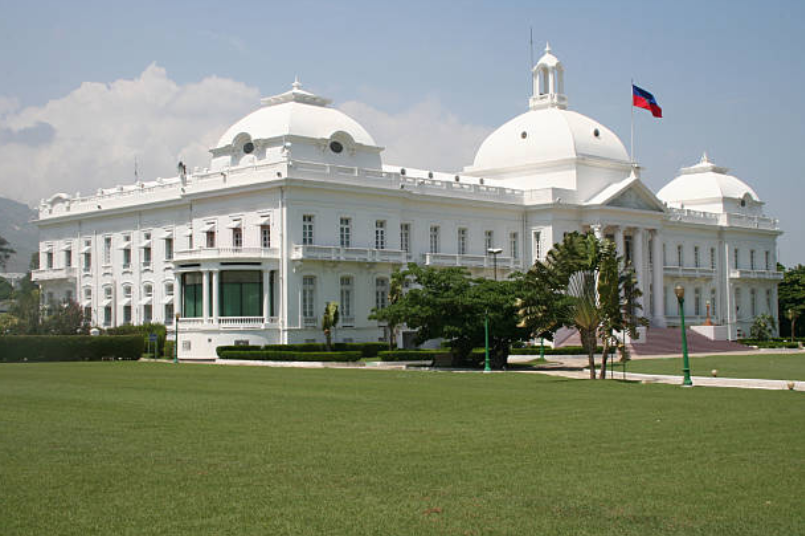

<!DOCTYPE html>
<html lang="en-US">
<head>
    <meta charset="UTF-8">
    <meta name="description" content="Haiti problem social politic and economic">
    <meta name="author" content="Steve Chrispin">
    <link rel="stylesheet" type="text/css" href="style.css">
    <title>Haiti hope</title>
</head>
<body>
    <aside>
        <h2>Haiti</h2>
        
        <p>A beautful caribean country, in 1804 Haiti is the first black Republic were slavary abolished.
            For now, this beautiful country has many problems like; social economic, and politic. In accordance with the international community, there are a lot of corruptions made by the majority politic leaders and businessmen.<br>
            All these stuff keep the country poor and miserable. We all hope that Haiti will find the great leader to lead the population in a good way. We pray for you Haiti.
        </p>
    </aside>

    <main>
     
    </main>

    <footer>
        © Steve Chrispin - 2023
    </footer>
</body>
</html>